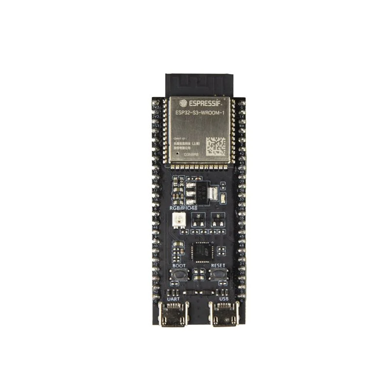

Stazione Meteo
Progetto:
Progetto di monitoraggio ambientale indoor/outdoor con ESP32, BME280, MQ135, DHT11 e LoRa Questo sistema integrato utilizza due moduli ESP32 per monitorare le condizioni ambientali interne ed esterne di un edificio. La componente esterna include un sensore BME280 che rileva temperatura, umidità e pressione atmosferica, parametri utilizzati per stimare indirettamente la qualità dell'aria; e un sensore per la qualità dell'aria, ovvero il MQ135 . La parte interna impiega un DHT11 per misurare temperatura e umidità, offrendo un'opzione economica per ambienti domestici.Il sistema collega due unità ESP32 tramite LoRa: l’esterna con BME280 (temperatura, umidità, pressione, qualità aria) e l’interna con DHT11 (temperatura/umidità). I dati trasmessi vengono visualizzati in tempo reale su un display LCD centrale, mostrando valori numerici per entrambi gli ambienti. |
 |